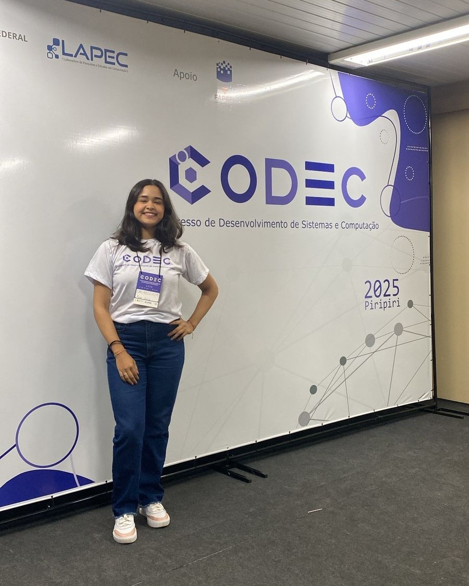
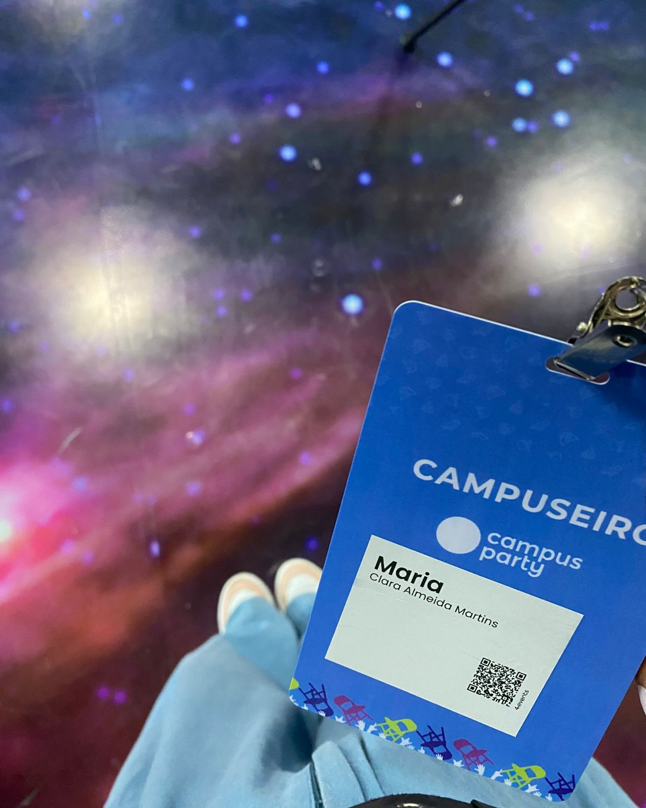

Sobre Mim
Olá, sou estudante de Análise e Desenvolvimento de Sistemas no Instituto Federal do Piauí e tenho grande interesse pelo universo da tecnologia.
Acredito que as experiências são muito enriquecedoras, por isso mantenho sempre uma mente aberta para novos conhecimentos, ideias e desafios já
que fazem parte do processo. Além disso, amo Alceu Valença, filmes nacionais e me sentir parte da natureza!
Apresentação em áudio
Experiências


Estou em processo de formação no ensino superior na área de tecnologia e, principalmente nesse período, tenho buscado viver experiências que me ajudem
a compreender melhor esse universo. Cada novo evento que participo percebo quão abrangente essa área é e as diversas oportunidades que ela possibilita.
Em alguns desses momentos já participei da organização de eventos e conheci pessoas muito marcantes da comunidade dev, tive contato com tecnologias
que até então não conhecia e aprendi muito sobre as exigências do mercado de trabalho para esse ramo.
Habilidades
| Tecnologia | Nível de Conhecimento | Tempo de Prática |
|---|---|---|
| HTML | Básico | 8 meses |
| TypeScript | Básico | 11 meses |
| Git e GitHub | Básico | 6 meses |
| PostgreSQL | Básico | 6 meses |
| Habilidades em constante desenvolvimento. | ||
Formação
Em relação à minha formação, concluí o ensino médio no ano de 2024 e atualmente sou estudante de Análise e Desenvolvimento de Sistemas no Instituto Federal
do Piauí (IFPI). Durante a formação tenho buscado desenvolver habilidades em lógica de programação,
desenvolvimento web e construção de sistemas, sempre
unindo teoria e prática por meio de projetos e experiências acadêmicas.
Projetos
Nesta seção apresento alguns dos projetos que venho desenvolvendo ao longo da minha formação.
Entre eles estão trabalhos acadêmicos, realizados durante as
disciplinas dos módulos anteriores
e no final o meu primeiro projeto pessoal, no qual busco explorar novas ideias, aprender
diferentes ferramentas e aprofundar
meus conhecimentos na área de tecnologia.
- Sistema de Gerenciamento de Estacionamento
-
Projeto acadêmico desenvolvido durante o curso com o objetivo de registrar
a entrada e saída de veículos em um estacionamento, calcular o tempo de
permanência e gerar o valor correspondente ao serviço. - Portfólio Pessoal em HTML
-
Página web desenvolvida utilizando HTML5 e elementos semânticos para apresentar
minhas informações, experiências, habilidades e projetos de forma
organizada. - Sistema de Agenda Virtual
-
Projeto pessoal em desenvolvimento voltado para a organização de horários
e compromissos, permitindo visualizar disponibilidades e realizar agendamentos
com praticidade.